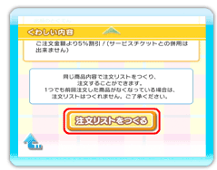

以前に注文した内容を確認したり、同じ内容で再注文したりすることができます。
トップ画面で を選んでください。
を選んでください。
12 |
注文した内容を確認する |
 |
● 注文きろく一覧画面 ※現在注文中の注文きろくには、が表示されます。お届け時間から６時間が経過すると消えます。 ※注文きろくは、30件を超えると古いものから順に削除されます。 ● 注文きろく詳細画面 ※を消しても、注文はキャンセルできません。 ※が表示されるのは、注文きろく一覧画面でがある記録のみです。 ※注文内容などに関するお問い合わせは、注文されたお店に直接お問い合わせください。 注文きろくからの再注文について がない注文きろくには、が表示されます。を選ぶと、以前注文した出前と同じ内容の注文リストを簡単に作ることができます。 
※前回の注文内容から、商品や数量の変更などもできます（→P.10）。 ※季節限定商品やメニューの変更などで、1つでも前回注文した商品がなくなっている場合は、注文きろくからの再注文はできません。トップ画面の「出前をとる」を選び、お店や商品を選んで注文してください（→P.8）。 |
 |
 |
 |